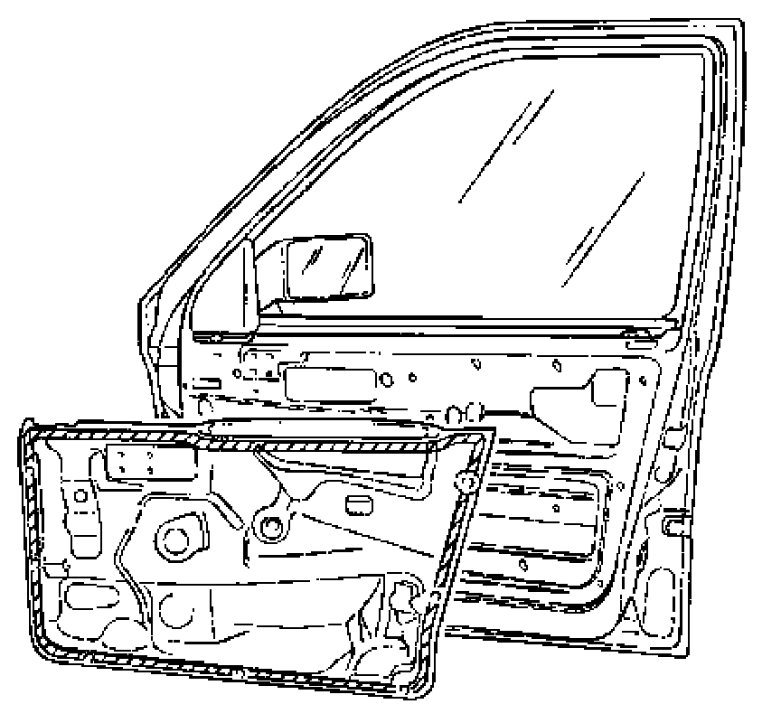
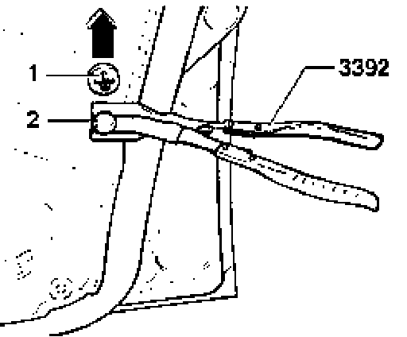
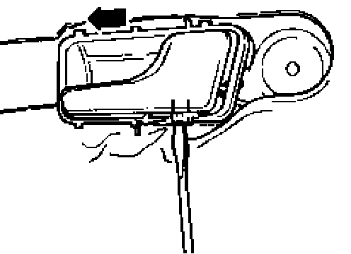
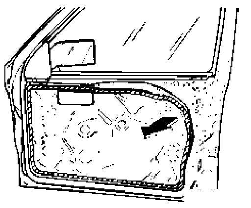
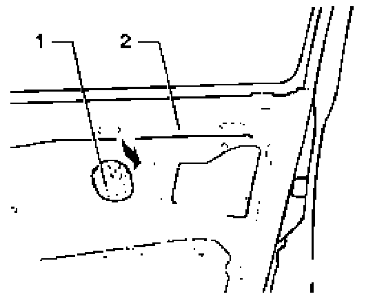

Vapor Barrier
Vapor barrier, replacing 01.94 --->

The purpose of vapor barrier is to seal off the passenger compartment from noise, water penetration and drafts.
The vapor barrier can be released and re-attached up to 4 times, without using additional adhesive, providing the barrier is undamaged.
Replacement vapor barrier
-----> 02.95 is supplied with self-adhesive strip
03.95 -----> is supplied without adhesive strip. Bond this replacement barrier with adhesive D 469 101 A3.
Adhesive surface: shaded area
CAUTION! Part numbers are listed for reference only. Always check with your Parts department for the latest in formation.
Special tools, testers and auxiliary items
- 3392 Pliers
- VAG1628 Cartridge pistol
- 3356 Roller
- Adhesive D 469 101 A3 (cartridge)
CAUTION! Part numbers are listed for reference only. Always check with your Parts department for the latest information.
Removing
- Remove door trim.

- Take off clip upper part -1 - (arrow).
- Press clip lower part -2-off door using pliers 3392.
Note: Check clip lower part for damage and replace necessary.

- Press securing clip out of hole in door inner panel.
- Press remote control in forward direction out of the securing holes.

- Pull vapor barrier off, all along edge in sections (each section approx. 15 cm or 9/16 in.). Grasp vapor barrier as close to adhesive as possible (shaded area).
Installing

- When replacing vapor barrier remove remaining adhesive -2- from door. To do this, pull a small amount from door and form a ball. Pull remaining adhesive off door using ball -1 - (dabbing action) (self-bonding of adhesive is greater than bonding action to door).